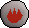
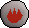
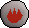
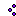
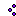
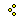
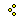

I, [Joseph Suarez], am the primary author of Neural MMO. I plan to continue development for at least the duration of my EECS PhD at MIT or until someone convinces me that there is a better way to solve AGI. Everything written in the source and documentation is my own opinion. I do not speak for OpenAI, MIT, Clare, Phillip, Igor, or anyone else involved in the project.
2021 (summer): v1.5.1 release
Neural MMO v1.5.1 AICrowd competition launched
Neural MMO v1.5 presented at Ray Summit 2021
2021 (winter): v1.5 release
Neural MMO v1.5 presented at English Week 2021, IUT Vannes
2020 (spring): v1.3 and v1.4 releases
Neural MMO v1.4 presented at the ICML 2020 Learning in Artificial Open Worlds workshop
Neural MMO v1.3 presented as an Extended Abstract at AAMAS 2020
Neural MMO v1.3-prerelease presented at a casual seminar in NeosVR
2019 (fall): Neural MMO development continues at MIT as the main project of my PhD
I am continuing my role as the primary developer
Phillip Isola resumes project oversight as my adviser
We are beginning to get open source contributions
2018 (fall): Independent development results in v1.1 and v1.2:
I ran the project solo. These versions are derivative works and are MIT sublicensed in my name
2018 (spring): Neural MMO development continues during a 6-month internship at OpenAI, culminating in the v1.0 environment (MIT licensed to OpenAI) and THREE.js client (MIT licensed to Joseph Suarez and Clare Zhu) release:
I continued my role as the primary developer
Yilun Du assisted with running experiments and particularly in setting up tournaments for the v1.0 release
Phillip Isola and Igor Mordatch managed and advised the project
The v1.0 environment is registered to OpenAI and available under the MIT license
The legacy THREE.js client was developed independently as a collaboration between myself and Clare Zhu. It was originally created as follow-up work for the paper and blog post, but we ended up merging it in. This is also the reason that the project is split into two repositories. It is registered to us jointly and is available under the MIT license
2017 (summer): Neural MMO development begins:
I started Neural MMO as an independent side project
I (Joseph Suarez) retain ownership of this smaller original code base and game kernel, along with associated ideas. I created these before my affiliations with OpenAI and MIT
Open source contributors, listed by time since latest contribution. Discord handle have been used for individuals who have not granted explicit permission to display their real names:
Thomas Cloarec: Developed the dynamic programming backend for scripted baseline agents
Jack Garbus: Major contributions to the logging framework, feedback on the documentation and tutorials
@tdimeola: Feedback on the documentation and tutorials
Some assets used in this project belong to [Jagex], the creators of Runescape, such as

We currently use them for flavor as an homage to the game that inspired the project. We believe these fall under fair use as a not-for-profit project for the advancement of artificial intelligence research – however, we are more than happy to remove them upon request. We do own the 2D and 3D files for agents, represented by three neurons.
Neural MMO was originally named “Projekt: Godsword” (God-Sword). The name comes from two sources: CD Projekt Red, my personal favorite game dev studio, and OldSchool Runescape, which contains an iconic set of weapons called godswords. The latter is a particularly good model for AI environments; the former is more of a soft inspiration. While we now refer to the project simply as (the first) Neural MMO, the source files and API retain several of the original naming conventions for flavor.


 
 


 
  
